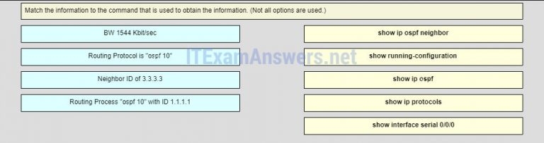

1.De forma predeterminada, ¿cuál es el costo de OSPF para cualquier enlace con un ancho de banda de 100 Mb / s o mayor?
- 1 *
- 100
- 10000
- 10000
- @javi__super
2.¿Qué comando verificará que un enrutador que ejecuta OSPFv3 ha formado una adyacencia con otros enrutadores en su área OSPF?
- Mostrar ipv6 ospf vecino *
- muestra el resumen de la interfaz ipv6
- mostrar ipv6 ruta ospf
- Mostrar configuración en ejecución
- @javi__super
3.¿Qué componente OSPF es idéntico en todos los enrutadores en un área OSPF después de la convergencia?
- base de datos de estado de enlace *
- base de datos de adyacencia
- Árbol SPF
- tabla de ruteo
- @javi__super
4.¿Qué paquete OPSF contiene los diferentes tipos de anuncios de estado de enlace?
- LSU *
- DBD
- LSR
- Hola
- @javi__super
5.¿Qué tres direcciones podrían usarse como la dirección de destino para los mensajes OSPFv3? (Elige tres.)
- FE80 :: 1 *
- FF02 :: AFF02 :: 1: 2
- FF02 :: 6 *
- FF02 :: 5 *
- @javi__super
6.Rellena el espacio en blanco.
- OSPF usa _______ como una métrica. Respuesta correcta: costo *
- @javi__super
7.¿Cuáles son los dos propósitos de una ID de enrutador OSPF? (Escoge dos.)
- para identificar de forma única el enrutador dentro del dominio OSPF *
- para habilitar el algoritmo SPF para determinar la ruta de menor costo para redes remotas
- Facilitar el establecimiento de la convergencia de la red.
- para facilitar la participación del router en la elección del router designado *
- @javi__super
8.Un administrador de red ingresa el comando ipv6 router ospf 64 en el modo de configuración global. ¿Cuál es el resultado de este comando?
- Al proceso OSPFv3 se le asignará una ID de 64. *
- El ancho de banda de referencia se establecerá en 64 Mb / s.
- Al enrutador se le asignará un ID de enrutador de 64.
- Al enrutador se le asignará un número de sistema autónomo de 64.
- @javi__super
9.¿Qué sucede inmediatamente después de que dos enrutadores OSPF hayan intercambiado paquetes de saludo y hayan formado una adyacencia adyacente?
- Intercambian listas abreviadas de sus LSDB. *
- Intercambian paquetes DBD para anunciar parámetros como hola e intervalos muertos.
- Solicitan más información sobre sus bases de datos.
- Negocian el proceso de elección si están en una red de acceso múltiple.
- @javi__super
10.Abra la actividad PT. Realice las tareas en las instrucciones de la actividad y luego complete la tarea. ¿Qué mensaje se muestra en www.ciscoville.com?
- ¡Terminación! *
- ¡Éxito!
- ¡Convergente!
- ¡Terminado!
- @javi__super
11.¿Cuáles son dos razones que evitarán que dos enrutadores formen una adyacencia OSPFv2? (Escoge dos.)
- temporizadores de OSPF Hello o Dead no coincidentes *
- Una versión de Cisco IOS que no coincide.
- un enrutador se conecta a un puerto FastEthernet en el switch y el otro se conecta a un puerto GigabitEthernet
- máscaras de subred no coincidentes en las interfaces de enlace *
- @javi__super
12.¿Qué utiliza automáticamente un enrutador Cisco para crear direcciones de enlace local en interfaces seriales cuando se implementa OSPFv3?
- una dirección MAC de interfaz Ethernet disponible en el enrutador, el prefijo FE80 :: / 10 y el proceso EUI-64 *
- la dirección MAC de la interfaz serial, el prefijo FE80 :: / 10 y el proceso EUI-64
- El prefijo FE80 :: / 10 y el proceso EUI-48
- la dirección MAC más alta disponible en el enrutador, el prefijo FE80 :: / 10 y el proceso EUI-48
- @javi__super
13.Se ha habilitado OSPFv3 de área única en un enrutador a través del comando ipv6 router ospf 20. ¿Qué comando habilitará este proceso OSPFv3 en una interfaz de ese enrutador?
- ipv6 ospf 20 area 0 *
- ipv6 ospf 20 area 20
- ipv6 ospf 0 area 0
- ipv6 ospf 0 area 20
- @javi__super
14.Rellena el espacio en blanco.
- La elección de un DR y un BDR se realiza en redes _________, como las redes Ethernet. Respuesta correcta: multiacceso *
- @javi__super
15.¿Qué comando proporcionará información específica para las rutas OSPFv3 en la tabla de enrutamiento?
- muestre la ruta ipv6 ospf *
- show ip route ospf
- mostrar ruta ipv6
- mostrar ruta ip
- @javi__super
16.¿Qué comando se debe usar para verificar la ID del proceso OSPF, la ID del enrutador, las redes que el enrutador está anunciando, los vecinos de los cuales el enrutador está recibiendo actualizaciones y la distancia administrativa predeterminada?
- mostrar protocolos ip *
- mostrar ip ospf vecino
- show ip ospf
- Mostrar interfaz ip ospf
- @javi__super
17.¿Cuál es la métrica que utiliza OSPF?
- costo *
- distancia
- número de saltos
- retrasar
- @javi__super
18.¿Qué función realiza el enrutador designado OSPF?
- Difusión de LSAs *
- resumiendo rutas entre áreas
- manteniendo la base de datos de estado de enlace
- Redistribución de rutas externas en OSPF.
- @javi__super
19.¿Qué se utiliza para crear la tabla de vecinos OSPF?
- base de datos de adyacencia *
- base de datos de estado de enlace
- base de datos de reenvío
- tabla de ruteo
- @javi__super
20.Cuando un ingeniero de redes está configurando OSPFv3 en un enrutador, ¿qué comando emitirá el ingeniero inmediatamente antes de configurar la ID del enrutador?
- enrutador ipv6 ospf 10 *
- claro proceso ipv6 ospf
- interfaz serial 0/0/1
- ipv6 ospf 10 area 0
- @javi__super
21.¿Qué preferirá usar un enrutador OSPF primero como ID de enrutador?
- cualquier dirección IP que esté configurada usando el comando router-id *
- la interfaz activa más alta que participa en el proceso de enrutamiento debido a una declaración de red específicamente configurada
- La IP de interfaz activa más alta que está configurada en el enrutador
- una interfaz de bucle invertido que está configurada con la dirección IP más alta en el enrutador
- @javi__super
22.Haga coincidir el estado OSPF con el orden en que se produce. (No se utilizan todas las opciones).
- Pregunta
- Respuesta
- @javi__super
23.Haga coincidir cada tipo de paquete OSPF con la forma en que lo utiliza un enrutador. (No se utilizan todas las opciones).
- Pregunta
- Respuesta
- @javi__super

24.Por orden de prioridad, haga coincidir la selección de ID de enrutador para un enrutador habilitado para OSPF con las posibles opciones de ID de enrutador. (No se utilizan todas las opciones).
- Prengunta
- Respuesta
- @javi__super
25.Haga coincidir la información con el comando que se utiliza para obtener la información. (No se utilizan todas las opciones).
- Pregunta 
- Respuesta
- @javi__super